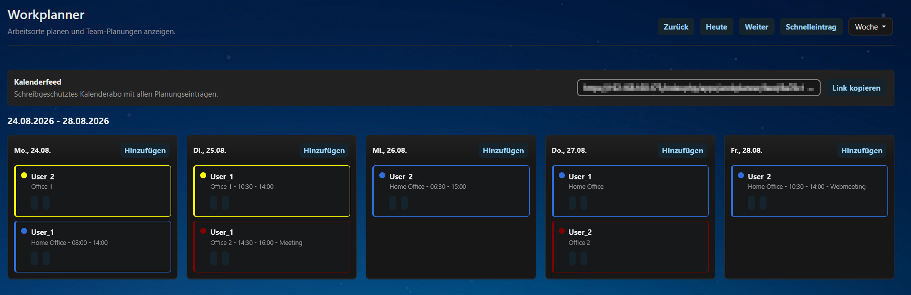

Plane mit deinem Team, wer wann wo arbeitet – Büro, Homeoffice, Außendienst. Direkt in Nextcloud, ohne extra Tools.
Im Nextcloud App Store GitHub
Gemeinsame Wochen- und Monatsansicht aller Arbeitsort-Planungen – wer ist wann wo?
Admins verwalten farbig markierte Standorte zentral – anlegen, sortieren, deaktivieren oder löschen.
Mehrere Einträge pro Tag mit optionaler Zeitspanne (von bis) und Notiz – z. B. Büro vormittags, Kunde nachmittags.
Einträge nach Zeit oder nach Benutzer anzeigen – mit Benutzer-Filter für größere Teams.
Eintrag in Sekunden vom Smartphone – auch unterwegs, ohne die volle Übersicht zu öffnen.
Geschützter, schreibgeschützter iCal-Feed – Teamplanung direkt im Kalender auf Handy, Tablet oder Desktop.
App Store: Workplanner im Nextcloud App Store – einfach installieren und aktivieren.
Manuell: Die App unter dem Namen workplanner in das apps-Verzeichnis deiner Nextcloud kopieren und in der Apps-Übersicht aktivieren. Nextcloud 30 oder neuer erforderlich.
Quelle: github.com/wenigdigital/workplanner (AGPL-3.0-or-later).
Workplanner helps teams coordinate office, remote, home office, and customer-site work directly in Nextcloud. Users plan one or more work location entries per day, add optional time ranges and notes, and view the shared plan in weekly or monthly views – sorted by time or by user, with a live user filter.
Administrators manage the available locations, past entries stay visible but read-only, and a tokenized, read-only calendar feed makes the planning visible on phones, tablets, and desktop calendar apps. English and German translations are included.
Workplanner ist Open Source (AGPL-3.0) und kostenlos. Wenn die App dir im Alltag nützt, unterstütze die Weiterentwicklung gern mit einer kleinen Spende:
Spenden über PayPal